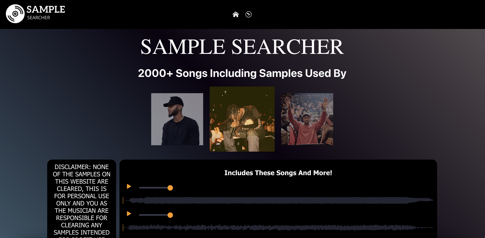
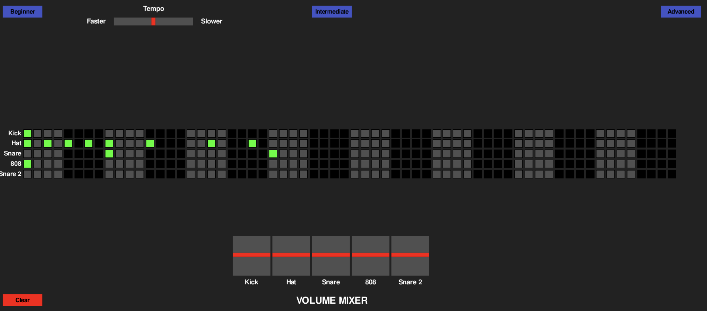

A collection of projects I've built using various technologies and frameworks. Each project represents a unique challenge and learning experience.

A full-stack web application designed to help music producers easily find and discover samples. Built with a React frontend and MySQL database, deployed on AWS EC2. Features automated web scraping of over 2000+ songs with comprehensive search and filtering capabilities.

A Python-based beat sequencer inspired by FL Studio's channel rack. Features active playback, grid selection, tempo adjustment, volume mixing, and multiple beat length modes. Demonstrates audio processing and real-time user interaction capabilities.